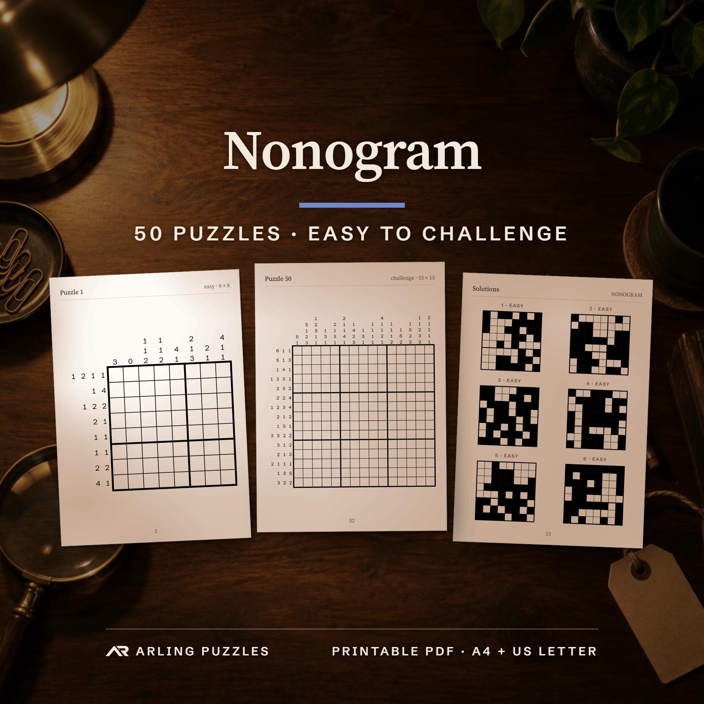

A REAL PAGE. NO SIGN-UP.
A little
nonogram break.
A blank grid becomes a pattern, one deduction at a time. See how the numbers work before you print your first puzzle.
Get the 50-puzzle book on Etsy ↗€2.90 listing price. Etsy shows any discount and local tax before you pay. One purchase, no subscription.
Download the free PDF sample ↓50 abstract nonograms · A4 + US Letter
Rules, an example with its answer, and all solutions.
Follow the logic
01 / 50 · EASY · 8 × 8Numbers give the lengths of filled blocks. Leave at least one empty square between blocks.
Press below to see which squares can be decided with certainty. This is a guided example, not a timed challenge.
No guessing. Every step follows the clues.

TAKE THE NEXT ONE OFF-SCREEN
Print a page.
Keep a pencil nearby.
The same book shown in this lesson has 13 easy, 15 medium, 15 hard and 7 challenge puzzles. All 50 are abstract patterns, with one verified solution each.
You receive two PDFs, each 62 pages. A4 and US Letter contain the same puzzles. Etsy delivers the files after payment; nothing is shipped.
Get the book on Etsy ↗See the full book details